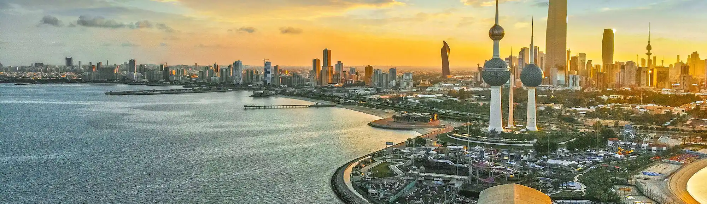
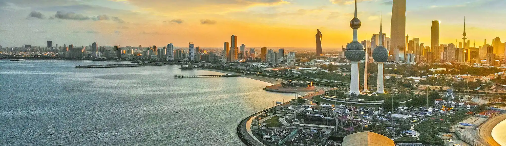

Venha conhecer mais sobre este país

Venha conhecer mais sobre este país
Nome ofiicial: Estado do Kuwait
Gentílico: Kuwaitiano
Expansão territorial: 17.818 km²
Localização: Oriente Médio
Capital: Cidade do Kuwait
Clima: Árido, Temperado
Governo: Monarquia Constitucional
Divisão adinistrativa: Seis governadorias
Idioma: Árabe
Religiões: Islâmicas (74,6%) e Cristãs (18,2%)
População: 4.329.000 habitantes (Dados de 2021)
Densidade demográfica: 242,9 hab./km²
Índice de Desenvolvimento Humano (IDH): 0,806
Moeda: Dinar kuwaitiano
Produto Interno Bruto (PIB): US$ 186,61 bilhões
PIB per capita: US$ 38.760
Hoje capital do país, a Cidade do Kuwait foi a primeira área do território a ser ocupada durante o século XVIII (18), e por isso o país recebeu a sua atual denominação. Os primeiros povos que se instalaram naquela região eram oriundos de outras áreas da própria península Árabe, constituindo assim uma organização sócio territorial propriamente dita já em meados daquele mesmo século. No ano de 1756, teve início o governo da família Al-Sabah, ainda hoje responsável pela nomeação do Emir, título que o monarca do Kuwait recebe.
A política kuwaitiana vem de uma monarquia parlamentarista e hereditária (passada de pai para filho), em um Estado unitário. A legislação do Kuwait é imune e inviolável, ou seja, qualquer crítica contra ele não é tolerada e punível por lei.
A economia do Kuwait depende quase totalmente da exploração de petróleo, tanto para seu desenvolvimento interno como para a obtenção de divisas. O país possui cerca de 10% das reservas mundiais e atualmente o Kuwait é um dos maiores produtores de petróleo do mundo.
A cultura do Kuwait se constituiu por meio da influência dos demais territórios árabes com quem faz fronteira, além dos imigrantes que constituem atualmente uma grande parcela de sua população. Os asiáticos, por exemplo, são o grupo majoritário no país, representando 40% de todos os seus habitantes. Os kuwaitianos são 30,4% da população, formada também por outros povos de países da península Árabe e do continente africano.O árabe é o principal idioma falado no país. Além disso, a religião islâmica tem papel fundamental na determinação dos seus costumes, o que compreende desde aspectos da vida cotidiana, de tradições mais conservadoras, até o calendário festivo do país, como o Ramadã e o Eid al-Fitr.
A gastronomia do Kuwait é repleta de sabores tradicionais árabes. Um dos pratos tradicionais do país é o machboos, preparado com especialidade de arroz e legumes, servida também com um molho especial do Kuwait.
>Outro prato bastante consumido pelos kuwaitianos, é o Muttabaq Samak, que seria uma iguaria onde o peixe é servido em um delicioso arroz, que é cozido em caldo de peixe, bem temperado.
A bandeira do Kuwait foi adotada em 7 de setembro de 1961, e oficialmente elevada em 24 de novembro de 1961.
Ela é composta por três faixas horizontais e uma espécie de triângulo sem pontas preto do lado esquerdo. Essas cores foram inspiradas em um poema de um artista local Safie Al-Deen Al-Hali.
Horizontalmente: A faixa verde deve estar no topo.
Verticalmente: A faixa verde deve estar no lado direito da bandeira.